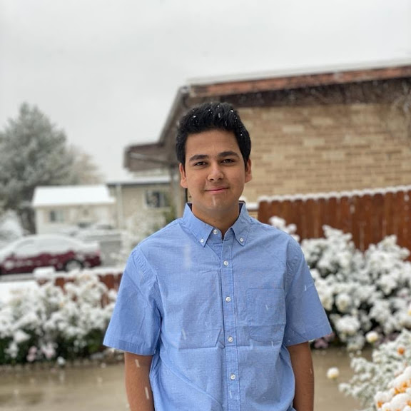

Profile
Name: Devendra Dahal
Email: devendrakdahal@gmail.com
Phone: (801) 897-0890
Location: Salt Lake City, Utah
LinkedIn: View Profile
Summary: I am a data science student at the University of Utah with over five years of professional experience, specializing in data analysis, algorithms, and machine learning in the banking and finance industry.
Skills
Languages
- English (Fluent)
- Nepali (Fluent)
- Hindi (Basic)
Data Science
- Data Analysis
- Data Visualization
- Machine Learning (Basic)
- Natural Language Processing
- Algorithms & Data Structures
Systems & Software
- Python
- SQL
- Excel
- R
- Tableau
- Power BI
Communication & Leadership
- Problem Solving
- Team Leadership
- Cross-Functional Collaboration
Experience
Web Data Scraping & Analytics Research Tool
Data Wrangling Class, University of Utah - May 2024
- Leveraged Python and Pandas for data extraction and analysis of video game consumption impacts.
Data Visualization for Remote Patient Monitoring
Data Visualization Class, University of Utah - December 2024
- Collaborated with a team of three to design interactive data visualizations using D3.js.
- Utilized data science techniques to collect, clean, and analyze remote medical monitoring data.
- Developed a storyboard-style visualization to aid doctors in identifying symptoms and potential issues before they occur, supporting better decision-making.
Program Coordinator – Tutoring
GEAR UP, Utah Valley University - Aug 2023 – Present
- Conducted statistical analysis to identify trends in student performance and maintain databases.
Team Lead
TRIO Upward Bound, University of Utah - Jun 2022 – Aug 2023
- Mentored high school students and led tailored academic programs.
Academic Support Specialist
Promise South Salt Lake - Aug 2018 – Jul 2019
- Provided tutoring and creative teaching to high school students.